AUTOMATIC TRANSMISSION UNIT > DISASSEMBLY |
| 1. REMOVE TRANSMISSION CONTROL SHAFT LEVER LH |
 |
Remove the nut, spring washer and control shaft lever LH.
| 2. REMOVE PARK/NEUTRAL POSITION SWITCH ASSEMBLY |
| 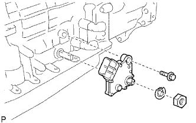 |
Using a screwdriver, bend the tabs of the lock washer.
Remove the nut, lock washer and bolt.
Remove the park/neutral position switch.
| 3. REMOVE OIL COOLER TUBE UNION |
Remove the 2 oil cooler tube unions.
Remove the O-ring from each oil cooler tube union.
| 4. REMOVE SPEED SENSOR |
| 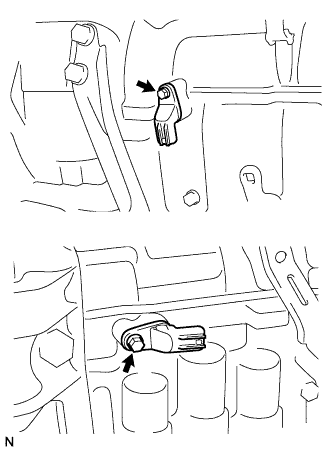 |
Remove the 2 bolts and 2 speed sensors.
Remove the O-ring from each sensor.
| 5. REMOVE AUTOMATIC TRANSMISSION BREATHER TUBE |
Remove the 2 bolts.
Remove the breather tube.
Remove the O-ring from the tube.
| 6. REMOVE AUTOMATIC TRANSMISSION HOUSING |
Remove the 10 bolts and transmission housing.
| 7. REMOVE REAR TRANSFER ADAPTER |
Remove the 8 bolts and transfer adapter.
Using a screwdriver, remove the transfer adapter hole snap ring.
| 8. REMOVE TRANSFER CASE ADAPTER REAR OIL SEAL |
Using a screwdriver, pry out the oil seal.
| 9. REMOVE TRANSFER CASE REAR ADAPTER OIL RECEIVER |
| 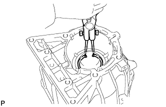 |
Using snap ring pliers, remove the snap ring and oil receiver.
| 10. FIX AUTOMATIC TRANSMISSION CASE SUB-ASSEMBLY |
Install the transmission case to an overhaul attachment.
| 11. REMOVE AUTOMATIC TRANSMISSION OIL PAN SUB-ASSEMBLY |
Remove the drain plug and gasket.
Remove the overflow plug and gasket.
 |
Remove the 20 bolts and oil pan.
| 12. INSPECT AUTOMATIC TRANSMISSION OIL PAN SUB-ASSEMBLY |
Remove the magnets and use them to collect steel particles.
Carefully look at the foreign matter and particles in the pan and on the magnets to anticipate the type of wear you will find in the transmission.
| 13. REMOVE VALVE BODY OIL STRAINER ASSEMBLY |
 |
Turn over the transmission.
Remove the 4 bolts and oil strainer from the valve body.
Remove the O-ring from the oil strainer.
| 14. REMOVE TRANSMISSION WIRE |
| 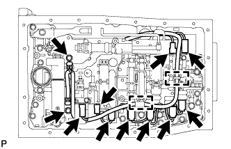 |
Remove the 2 bolts and 2 temperature sensor clamps.
Disconnect the 2 ATF temperature sensors.
Disconnect the 9 solenoid valve connectors.
Detach the wire harness from the 2 clamps.
 |
Remove the bolt and pull out the transmission wire.
Remove the O-ring from the transmission wire connector.
| 15. REMOVE TRANSMISSION VALVE BODY ASSEMBLY |
Remove the bolt, detent spring cover and detent spring.
 |
Remove the 19 bolts and valve body.
| 16. REMOVE CHECK BALL BODY |
Remove the check ball body and spring.
| *1 | Check Ball Body |
| *2 | Spring |
| 17. REMOVE TRANSMISSION CASE GASKET |
 |
Remove the 3 gaskets.
| 18. REMOVE BRAKE DRUM GASKET |
| 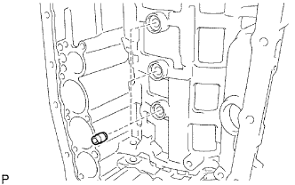 |
Remove the 3 gaskets.
| 19. REMOVE C-2 ACCUMULATOR PISTON |
 |
While applying compressed air to the oil hole, remove the C-2 accumulator piston and spring.
Remove the 2 O-rings from the piston.
| 20. REMOVE B-3 ACCUMULATOR PISTON |
|
While applying compressed air to the oil hole, remove the B-3 accumulator piston and spring.
Remove the 2 O-rings from the piston.
| 21. REMOVE C-3 ACCUMULATOR PISTON |
While applying compressed air to the oil hole, remove the C-3 accumulator piston and 2 springs.
Remove the 2 O-rings from the piston.
| 22. REMOVE B-1 ACCUMULATOR VALVE |
 |
Remove the B-1 accumulator valve and 2 springs.
| 23. REMOVE PARKING LOCK PAWL BRACKET |
 |
Remove the 3 bolts and bracket.
| 24. REMOVE PARKING LOCK ROD SUB-ASSEMBLY |
 |
Remove the parking lock rod from the manual valve lever.
| 25. REMOVE PARKING LOCK PAWL SHAFT |
Pull out the parking lock pawl shaft from the front side to remove it, and then remove the lock pawl and spring.
Remove the E-ring from the shaft.
| 26. REMOVE MANUAL VALVE LEVER SUB-ASSEMBLY |
 |
Using a hammer and screwdriver, cut off the spacer and remove it from the shaft.
Using a pin punch and hammer, tap out the spring pin.
Pull the manual valve lever shaft out through the case and remove the manual valve lever.
| 27. REMOVE MANUAL VALVE LEVER SHAFT OIL SEAL |
 |
Using a screwdriver, pry out the 2 oil seals.
| 28. REMOVE OIL PUMP ASSEMBLY |
 |
Remove the 10 bolts.
Using SST, remove the oil pump.
| 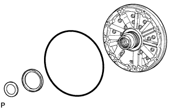 |
Remove the 2 thrust bearing races and O-ring from the oil pump.
| 29. REMOVE CLUTCH DRUM AND INPUT SHAFT ASSEMBLY |
 |
Remove the clutch drum and input shaft assembly from the transmission case.
Remove the clutch drum thrust washer and 2 thrust needle roller bearings.
| 30. INSPECT NO. 2 1-WAY CLUTCH ASSEMBLY |
 |
Hold the reverse clutch hub and turn the 1-way clutch assembly.
Check that the 1-way clutch turns freely clockwise and locks when turned counterclockwise.
 | Free |
 | Lock |
| 31. REMOVE NO. 2 1-WAY CLUTCH ASSEMBLY |
 |
Remove the No. 2 1-way clutch and clutch drum thrust washer from the clutch drum and input shaft assembly.
| 32. FIX CLUTCH DRUM AND INPUT SHAFT ASSEMBLY |
Place the oil pump onto the torque converter clutch, and then place the clutch drum and input shaft assembly onto the oil pump.
| 33. REMOVE REVERSE CLUTCH HUB SUB-ASSEMBLY |
Using a screwdriver, remove the snap ring.
Remove the reverse clutch reaction sleeve and reverse clutch hub sub-assembly together with the rear clutch disc set from the clutch drum.
| 34. REMOVE REAR CLUTCH DISC SET |
Remove the clutch cushion plate, reverse clutch flange, 5 discs and 4 plates from the reverse clutch hub.
Remove the reverse clutch flange from the clutch drum.
| 35. INSPECT REAR CLUTCH DISC |
 |
Replace all discs if one of the following problems is present: 1) a disc, plate or flange is worn or burnt, 2) the lining of a disc is peeled off or discolored, or 3) the grooves or printed numbers have even a little bit of damage.
| 36. INSPECT REVERSE CLUTCH HUB SUB-ASSEMBLY |
 |
Using a dial indicator, measure the inside diameter of the reverse clutch hub bush.
| 37. REMOVE FORWARD CLUTCH HUB SUB-ASSEMBLY |
| 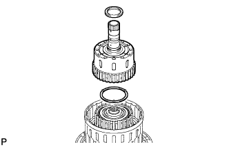 |
Remove the thrust needle roller bearing, forward clutch hub and No. 3 clutch hub thrust washer from the clutch drum.
| 38. INSPECT FORWARD CLUTCH HUB SUB-ASSEMBLY |
 |
Using a dial indicator, measure the inside diameter of the forward clutch hub bush.
| 39. REMOVE COAST CLUTCH HUB SUB-ASSEMBLY |
Remove the 2 thrust needle roller bearings, the coast clutch hub together with the underdrive 1-way clutch and the thrust bearing race from the clutch drum.
| 40. INSPECT UNDERDRIVE 1-WAY CLUTCH ASSEMBLY |
| 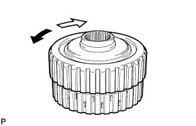 |
Hold the coast clutch hub and turn the 1-way clutch assembly. Check that the 1-way clutch turns freely clockwise and locks when turned counterclockwise.
| Free |
| Lock |
| 41. REMOVE UNDERDRIVE 1-WAY CLUTCH ASSEMBLY |
 |
Remove the underdrive 1-way clutch from the coast clutch hub.
Remove the No. 2 clutch hub thrust washer from the coast clutch hub.
| 42. REMOVE FORWARD MULTIPLE DISC CLUTCH DISC SET |
Using a screwdriver, remove the hole snap ring.
Remove the flange, 5 discs and 5 plates from the input shaft.
| 43. INSPECT FORWARD MULTIPLE DISC CLUTCH DISC |
 |
Replace all discs if one of the following problems is present: 1) a disc, plate or flange is worn or burnt, 2) the lining of a disc is peeled off or discolored, or 3) the grooves or printed numbers have even a little bit of damage.
| 44. REMOVE COAST CLUTCH DISC SET |
| 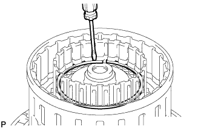 |
Using a screwdriver, remove the hole snap ring.
Remove the flange, 3 discs and 3 plates from the input shaft.
| 45. INSPECT COAST CLUTCH DISC |
| 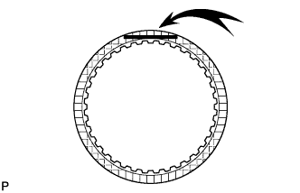 |
Replace all discs if one of the following problems is present: 1) a disc, plate or flange is worn or burnt, 2) the lining of a disc is peeled off or discolored, or 3) the grooves or printed numbers have even a little bit of damage.
| 46. REMOVE INPUT SHAFT ASSEMBLY |
| 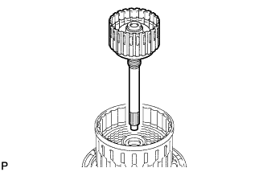 |
Remove the input shaft from the clutch drum.
| 47. REMOVE INPUT SHAFT OIL SEAL RING |
Remove the 4 oil seal rings from the input shaft.
| 48. REMOVE COAST CLUTCH PISTON |
 |
Place SST on the No. 1 clutch balancer and compress the return spring with a press.
Using SST, remove the snap ring.
Remove the No. 1 clutch balancer and forward clutch return spring from the input shaft.
Remove the O-ring from the No. 1 clutch balancer.
| 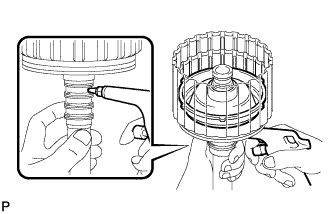 |
Hold the input shaft by hand and apply compressed air to the input shaft to remove the coast clutch piston.
| 49. INSPECT FORWARD CLUTCH RETURN SPRING SUB-ASSEMBLY |
| 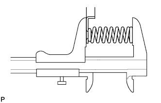 |
Using a vernier caliper, measure the free length of the spring together with the spring seat.
| 50. REMOVE FORWARD CLUTCH PISTON |
Hold the input shaft by hand and apply compressed air to the input shaft to remove the forward clutch piston.
Remove the O-ring from the input shaft.
| 51. REMOVE DIRECT CLUTCH DISC SET |
Using a screwdriver, remove the 2 hole snap rings from the clutch drum.
Remove the direct clutch flange, 6 discs and 6 plates from the clutch drum.
| 52. INSPECT DIRECT CLUTCH DISC |
 |
Replace all discs if one of the following problems is present: 1) a disc, plate or flange is worn or burnt, 2) the lining of a disc is peeled off or discolored, or 3) the grooves or printed numbers have even a little bit of damage.
| 53. REMOVE NO. 3 CLUTCH BALANCER |
| 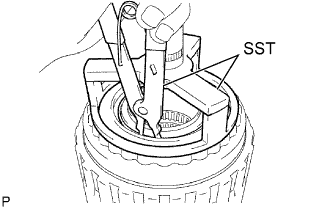 |
Place SST on the No. 3 clutch balancer and compress the return spring with a press.
Using SST, remove the snap ring.
Remove the No. 3 clutch balancer.
Remove the reverse clutch return spring and O-ring from the reverse clutch piston sub-assembly.
| 54. INSPECT REVERSE CLUTCH RETURN SPRING SUB-ASSEMBLY |
| 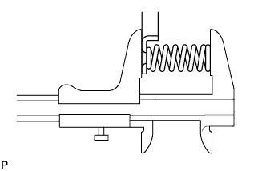 |
Using a vernier caliper, measure the free length of the spring together with the spring seat.
| 55. REMOVE REVERSE CLUTCH PISTON SUB-ASSEMBLY |
 |
Remove the reverse clutch piston from the clutch drum.
Remove the O-ring from the reverse clutch piston.
 |
Remove the O-ring from the clutch drum.
| 56. REMOVE DIRECT CLUTCH PISTON SUB-ASSEMBLY |
Place SST on the direct clutch piston and compress the return spring with a press.
Using SST, remove the snap ring.
 |
Using 2 screwdrivers, remove the direct clutch piston together with the No. 2 clutch balancer and direct clutch return spring sub-assembly.
 |
Remove the No. 2 clutch balancer and direct clutch return spring from the direct clutch piston.
Remove the 2 O-rings from the direct clutch piston.
| 57. INSPECT DIRECT CLUTCH RETURN SPRING SUB-ASSEMBLY |
 |
Using a vernier caliper, measure the free length of the spring together with the spring seat.
| 58. REMOVE NO. 3 BRAKE SNAP RING |
| 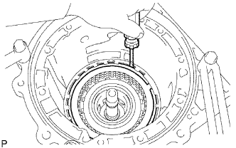 |
Using a screwdriver, remove the No. 3 brake snap ring from the case.
| 59. REMOVE NO. 3 BRAKE DISC SET |
Remove the flange, 4 discs, 4 plates and cushion plate from the case.
| 60. INSPECT NO. 3 BRAKE DISC |
 |
Replace all discs if one of the following problems is present: 1) a disc, plate or flange is worn or burnt, 2) the lining of a disc is peeled off or discolored, or 3) the grooves or printed numbers have even a little bit of damage.
| 61. REMOVE NO. 3 BRAKE PISTON HOLE SNAP RING |
 |
Using SST, remove the snap ring.
| 62. REMOVE 1-WAY CLUTCH ASSEMBLY |
 |
Remove the 1-way clutch assembly and No. 1 planetary carrier thrust washer from the case.
| 63. REMOVE NO. 3 BRAKE CYLINDER |
| 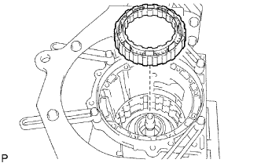 |
Remove the No. 3 brake cylinder from the case.
| 64. REMOVE NO. 3 BRAKE PISTON |
| 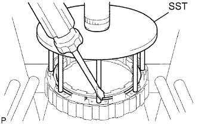 |
Using SST and a press, compress the return spring and remove the snap ring.
 |
Hold the No. 3 brake piston and apply compressed air (392 kPa, 4.0 kgf/cm2, 57 psi) to the 2nd brake cylinder to remove the No. 3 brake piston.
 |
Remove the 2 O-rings from the No. 3 brake piston.
| 65. INSPECT NO. 3 BRAKE PISTON RETURN SPRING SUB-ASSEMBLY |
| 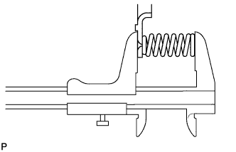 |
Using a vernier caliper, measure the free length of the spring together with the spring seat.
| 66. REMOVE FRONT PLANETARY GEAR ASSEMBLY |
 |
Remove the 1-way clutch inner race and front planetary gear assembly from the case.
Remove the thrust bearing race, thrust needle roller bearing and No. 2 planetary carrier thrust washer from the front planetary gear assembly.
| 67. INSPECT FRONT PLANETARY GEAR ASSEMBLY |
 |
Using a feeler gauge, measure the front planetary pinion gear thrust clearance.
 |
Using a cylinder gauge, measure the inside diameter of the front planetary gear bush.
| 68. INSPECT 1-WAY CLUTCH ASSEMBLY |
 |
Install the 1-way clutch to the 1-way clutch inner race.
Hold the 1-way clutch inner race and turn the 1-way clutch assembly. Check that the 1-way clutch turns freely counterclockwise and locks when turned clockwise.
| Free |
| Lock |
Remove the 1-way clutch from the 1-way clutch inner race.
| 69. REMOVE FRONT PLANETARY RING GEAR |
| 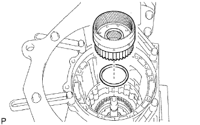 |
Remove the front planetary ring gear and thrust needle roller bearing from the transmission case.
| 70. REMOVE CENTER PLANETARY RING GEAR |
 |
Using a screwdriver, remove the snap ring.
 |
Remove the center planetary ring gear and front planetary ring gear flange from the front planetary ring gear.
| 71. REMOVE NO. 1 BRAKE DISC SET |
Remove the flange, 4 discs and 4 plates from the case.
| 72. INSPECT NO. 1 BRAKE DISC |
 |
Replace all discs if one of the following problems is present: 1) a disc, plate or flange is worn or burnt, 2) the lining of a disc is peeled off or discolored, or 3) the grooves or printed numbers have even a little bit of damage.
| 73. REMOVE NO. 1 BRAKE PISTON RETURN SPRING SNAP RING |
 |
Using a screwdriver, remove the No. 1 brake piston return spring snap ring from the case.
| 74. REMOVE NO. 1 BRAKE PISTON RETURN SPRING SUB-ASSEMBLY |
 |
Remove the brake piston return spring and No. 1 brake piston with No. 1 brake cylinder from the case.
| 75. INSPECT BRAKE PISTON RETURN SPRING SUB-ASSEMBLY |
 |
Using a vernier caliper, measure the free length of the spring together with the spring seat.
| 76. REMOVE NO. 1 BRAKE PISTON |
 |
Hold the No. 1 brake cylinder and apply compressed air (392 kPa (4.0 kgf/cm2, 57 psi)) to the No. 1 brake cylinder to remove the No. 1 brake piston.
Remove the 2 O-rings from the No. 1 brake piston.
| 77. REMOVE NO. 2 BRAKE DISC SET |
 |
Using a screwdriver, remove the snap ring from the case.
Remove the flange, 4 discs, 4 plates and brake piston return spring from the case.
| 78. INSPECT NO. 2 BRAKE DISC |
 |
Replace all discs if one of the following problems is present: 1) a disc, plate or flange is worn or burnt, 2) the lining of a disc is peeled off or discolored, or 3) the grooves or printed numbers have even a little bit of damage.
| 79. INSPECT NO. 2 BRAKE PISTON RETURN SPRING SUB-ASSEMBLY |
 |
Using a vernier caliper, measure the free length of the spring together with the spring seat.
| 80. REMOVE NO. 2 BRAKE PISTON |
 |
Hold the No. 2 brake piston and apply compressed air (392 kPa, 4.0 kgf/cm2, 57 psi) to the transmission case to remove the No. 2 brake piston and No. 2 brake cylinder.
Remove the 2 O-rings from the No. 2 brake piston.
| 81. REMOVE CENTER PLANETARY GEAR ASSEMBLY |
 |
Remove the thrust bearing race, center planetary gear and planetary sun gear from the case.
| 82. INSPECT CENTER PLANETARY GEAR ASSEMBLY |
 |
Using a feeler gauge, measure the center planetary gear pinion thrust clearance.
| 83. REMOVE INTERMEDIATE SHAFT |
 |
Using a screwdriver, remove the snap ring from the case.
 |
Remove the intermediate shaft with No. 3 1-way clutch assembly from the case.
| 84. INSPECT NO. 3 1-WAY CLUTCH ASSEMBLY |
 |
Hold the rear planetary ring gear flange and turn the 1-way clutch. Check that the 1-way clutch turns freely counterclockwise and locks when turned clockwise.
| Free |
| Lock |
| 85. REMOVE NO. 3 1-WAY CLUTCH ASSEMBLY |
| 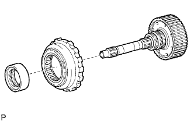 |
Remove the No. 3 1-way clutch assembly and 1-way clutch inner race from the intermediate shaft.
| 86. REMOVE REAR PLANETARY RING GEAR FLANGE SUB-ASSEMBLY |
 |
Remove the planetary ring gear flange together with the rear planetary ring gear, thrust bearing race, thrust needle roller bearing and thrust bearing race from the intermediate shaft.
 |
Using a screwdriver, remove the snap ring.
Remove the rear planetary ring gear flange from the rear planetary ring gear.
| 87. INSPECT REAR PLANETARY RING GEAR FLANGE SUB-ASSEMBLY |
 |
Using a dial indicator, measure the inside diameter of the rear planetary ring gear bush.
| 88. INSPECT INTERMEDIATE SHAFT |
| 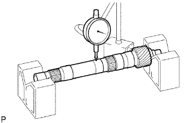 |
Using a dial indicator, measure the intermediate shaft runout.
 |
Using a micrometer, check the outer diameter of the intermediate shaft at the positions shown in the diagram.
| 89. REMOVE BRAKE PLATE STOPPER SPRING |
 |
| 90. REMOVE NO. 4 BRAKE DISC SET |
Remove the 2 flanges, 8 discs and 7 plates from the case.
| 91. INSPECT NO. 4 BRAKE DISC |
 |
Replace all discs if one of the following problems is present: 1) a disc, plate or flange is worn or burnt, 2) the lining of a disc is peeled off or discolored, or 3) the grooves or printed numbers have even a little bit of damage.
| 92. REMOVE REAR PLANETARY GEAR ASSEMBLY |
| 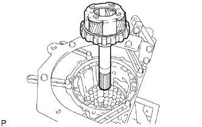 |
Remove the rear planetary gear assembly from the case.
 |
Remove the thrust needle roller bearing from the rear planetary gear.
 |
Remove the thrust bearing race from the case.
| 93. INSPECT REAR PLANETARY GEAR ASSEMBLY |
 |
Using a feeler gauge, measure the rear planetary gear pinion thrust clearance.
 |
Using a dial indicator, measure the inside diameter of the rear planetary gear bush.
| 94. REMOVE 1ST AND REVERSE BRAKE RETURN SPRING SUB-ASSEMBLY |
Place SST on the spring retainer and compress the brake return spring.
Using SST, remove the snap ring and brake return spring.
| *1 | Snap Ring |
| 95. INSPECT 1ST AND REVERSE BRAKE RETURN SPRING SUB-ASSEMBLY |
 |
Using a vernier caliper, measure the free length of the spring together with the spring seat.
| 96. REMOVE 1ST AND REVERSE BRAKE PISTON |
Apply compressed air (392 kPa, 4.0 kgf/cm2, 57 psi) to the transmission case to remove the 1st and reverse brake piston.
Remove the O-ring from the 1st and reverse brake piston.
| 97. REMOVE BRAKE REACTION SLEEVE |
Using SST, remove the reaction sleeve.
Remove the 2 O-rings from the reaction sleeve.
| 98. REMOVE NO. 4 BRAKE PISTON |
Using SST, remove the brake piston.
Remove the 2 O-rings from the brake piston.